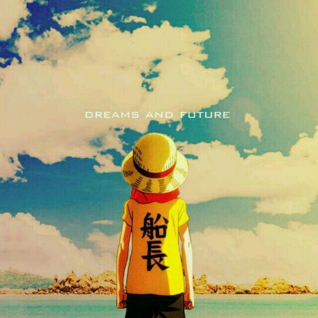

你，我生命中一个重要的过客，我们之所以是过客，因为你未曾会为我停留。
关于我
大学专业一脸茫然的选择了计算机信息管理， 从此便入了编程这个坑，渐行渐远， 也算是半只脚踏入了这个行业。 走在.NET开发路上的、热衷于微软开发的产品、 喜欢下棋，但是棋艺一般、 喜欢篮球，却屡屡被虐。 踏踏实实做好每一步，厚积之后的薄发才有更有意义， 少些攀比，就少些浮躁。 迷茫的时候就出去走走，看看书籍，看看外面的世界， 总归有一个值得你奋斗的理由。 工作之余不要忘记锻炼身体，身体垮了，什么都没了。

.NET | 余锦湖
.NET、看书、锻炼、动漫、休闲